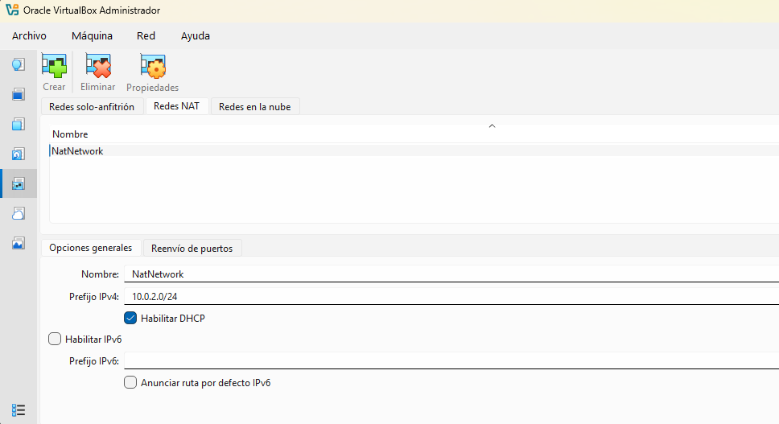
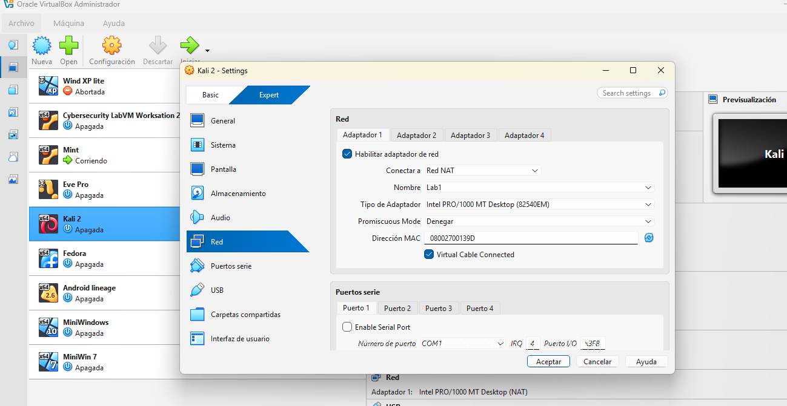
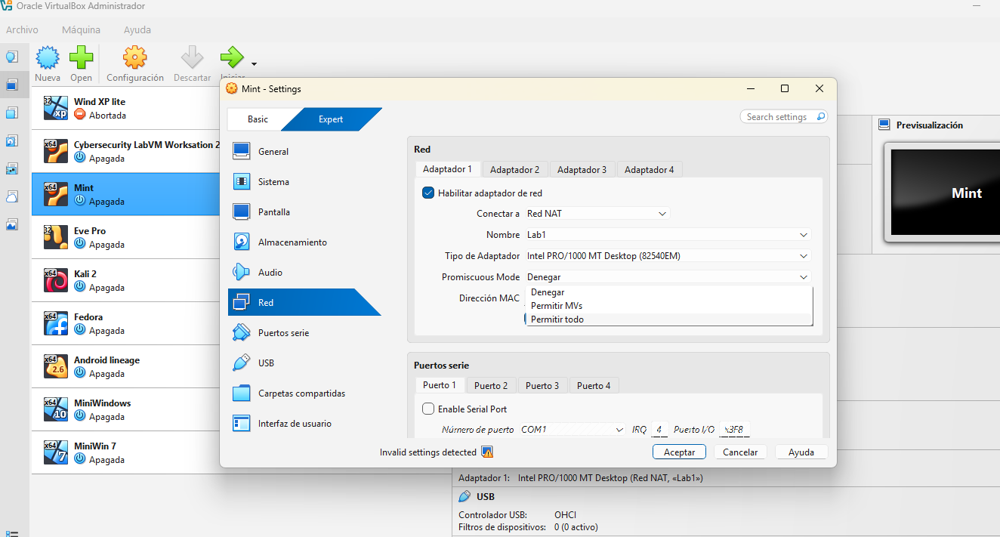

Step-by-step guide to NAT Network creation and VM isolation in VirtualBox.
Before connecting virtual machines, we must define a virtual switch that allows internal communication while providing controlled internet access.
| Parameter | Value |
|---|---|
| Network Name | Lab1 |
| Network CIDR | 10.0.2.0/24 |
| DHCP Support | Enabled (Checked) |

Each machine (Attacker and Victim) needs to be manually linked to the newly created virtual segment.

To perform packet sniffing and MITM attacks, the virtual network adapter must be able to "see" all traffic on the segment, not just traffic directed to its own MAC address.

Ensure both machines can communicate and reach the internet through the virtual gateway.
ip address.ping 10.0.2.1.